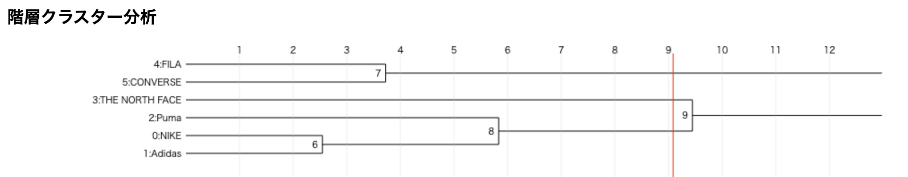
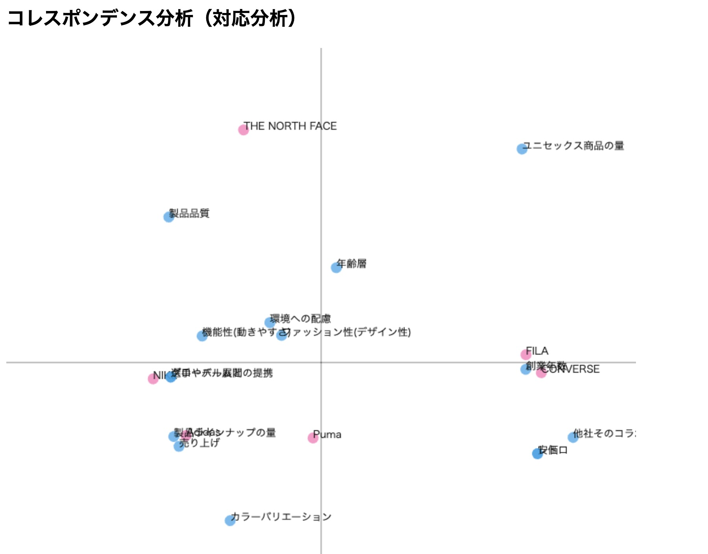

共同制作者
タッカンマリ
muku
散布図の画像


クロス集計表のcsvファイル
スポーツブランド.csv
説明（分析結果の言語化）
・adidas, NIKE
・PUMA
・THE NORTH FACE
・FILA, CONVERSE
この4つに分けられると考えました。
【adidas, NIKE】
・スポーツをする際の機能に優れている。
・デザイン性も優れている。
・チームや選手のスポンサー、売り上げ、グローバル展開、環境への配慮など多くの点で優れている。
・価格帯は少し高め。
【PUMA】
・スポーツブランドとしてもデザイン性としてもバランスが取れている
（＝これといって秀でているものが他５社に比べ見つけられなかった）
【THE NORTH FACE】
・スポーツより登山やハイキング、キャンプに特化している。
・機能性が高いが、価格も高い。
【FILA, CONVERSE】
・創業してから長年続いている会社のため、レトロなデザインが多く、人気がある。
・スポーツでの機能性より、ファッション性に優れている。
・価格帯が安い。
・ユニセックスの商品数が多い。
発表資料